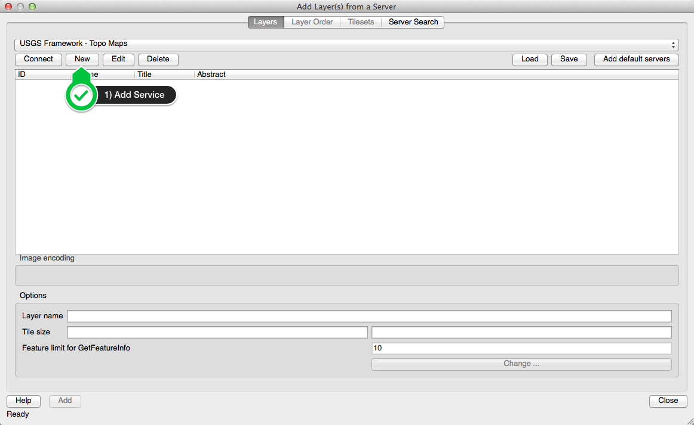
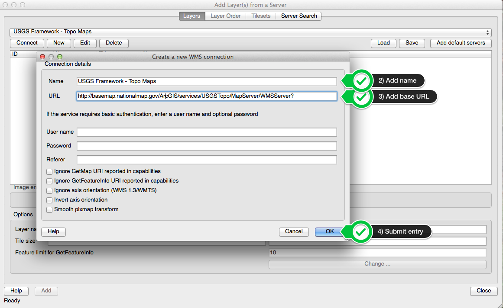
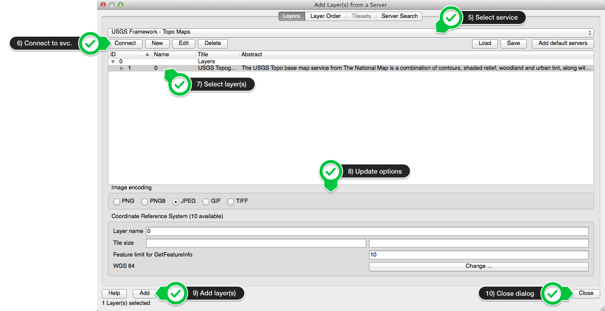
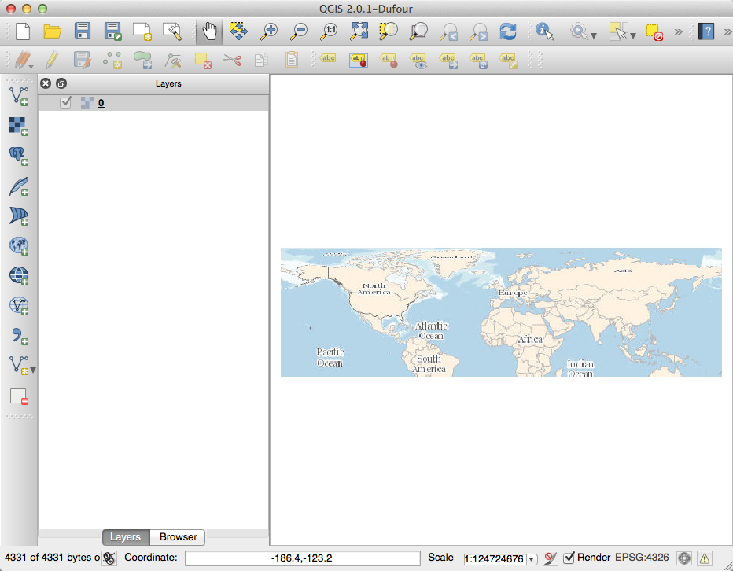
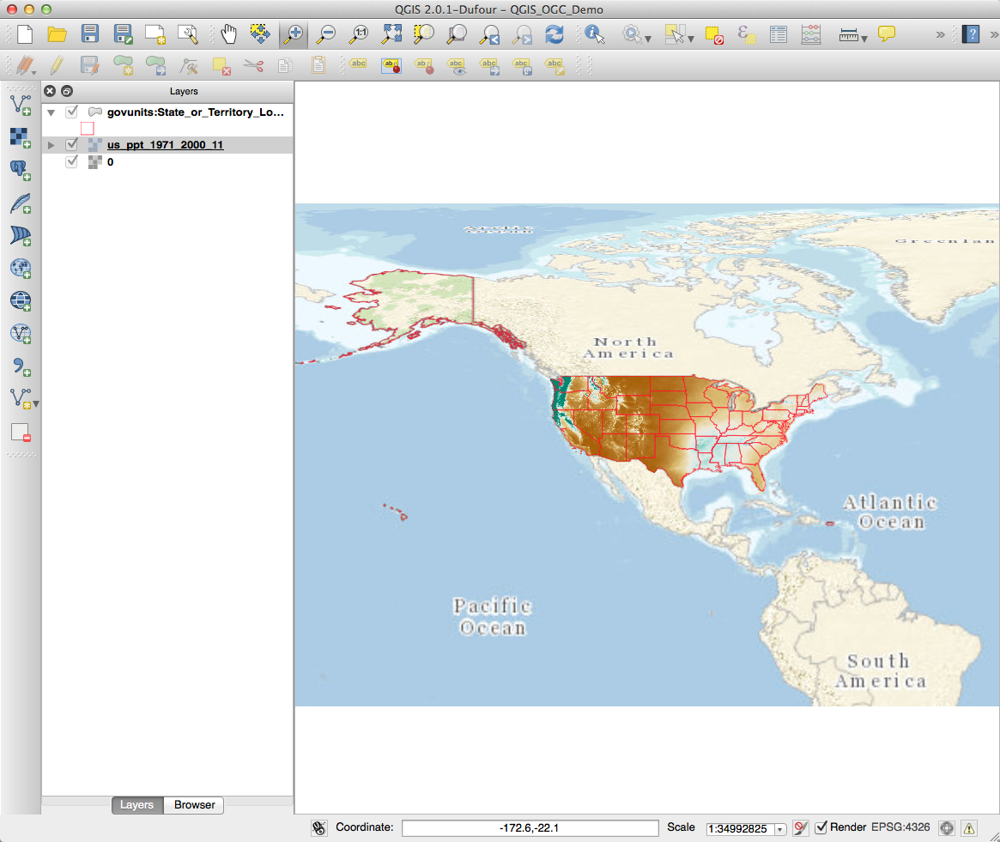

- Common Model for Client Configuration for Connections to Remote OGC Services
- Specific Client Examples
Quantum GIS (QGIS)
ArcGIS
Based upon the results of a GetCapabilities request against a remote service. GetCapabilities request information provided as either:
- The base URL to which the OGC service parameters would be added
- A complete GetCapabilities request against the service
NASA Earth Observations (NEO) Imagery WMS
http://neowms.sci.gsfc.nasa.gov/wms/wms?version=1.3.0&service=WMS&request=GetCapabilities
USGS Framework Services
http://frameworkwfs.usgs.gov/framework/wms/wms.cgi?SERVICE=wms&REQUEST=GetCapabilities
NASA Earth Observations (NEO) Imagery WMS
http://neowms.sci.gsfc.nasa.gov/wms/wms?
USGS Framework Services
http://frameworkwfs.usgs.gov/framework/wms/wms.cgi?
QGIS uses the Base URL approach for adding WMS, WFS or WCS layers to a project.
The General Process:
- Add service, or select existing service
- Connect to the service to retrieve the information from the GetCapabilities response for the service
- Select layer(s)
- Modify settings for layer(s)
- Add layer(s)
QGIS OGC Documentation
You need to know the GetCapabilities request for the service you want to add, for example one of the USGS Framework WMS services
http://frameworkwfs.usgs.gov/framework/wms/wms.cgi?
SERVICE=wms&REQUEST=GetCapabilities
determine the base URL -
http://frameworkwfs.usgs.gov/framework/wms/wms.cgi
in this case
If in doubt, check the information in the metadata
Select the layer type you would like to from "Layer" menu, or click the button in the interface to add a specific layer type.
Add a service to the list of services in the menu (if necessary - QGIS retains information about previously added services) by selecting the "New" option under the service list in the "Add Layer(s) from a Server" dialog

Add the name, base URL and any additional information about the service to the connection dialog box

After adding the service, you can select it from the service list in the "Add Layer(s) from a Server" dialog box, connect to the service to retrieve the GetCapabilities response from the service, select the layers and other options advertised by the service through its response, and add them to your map.

After adding the layer, it appears as an available layer in the table of contents for your map.

WMS, WFS and WCS in QGIS
Example

Based upon the results of a GetCapabilities request against a remote service. GetCapabilities request information provided as either:
- The base URL to which the OGC service parameters would be added
- A complete GetCapabilities request against the service
This model applies to ArcGIS just as it did for Quantum GIS - the base URL is provided to the various ArcGIS components that support the addition of OGC services to the client interface.
ArcGIS OGC Support Documentation
The addition of OGC WMS and WCS layers to ArcMap is through the same process of
- Select the "add data" button
- WMS/WCS services are added through the "GIS Servers" option in the "Add Data" dialog
- If you have not previously added the service from which you want to add layers, you select "Add WMS Server" or "Add WCS Server" from the list of options in the "Add Data" dialog
- You then provide the BASE GetCapabilities URL to the "ADD WMS/WCS Server" dialog that appears
- Click "OK", and the new WMS/WCS service is added to the list of services that is available when you choose to add a WMS service.
- You then select the layer(s) from the service that you want to add to your map and click the "add" button in the dialog.
- Adding WMS Services to ArcMap 10.2
ESRI Documentation
- Adding WCS Services to ArcMap 10.2
ESRI Documentation
- WFS support in ArcGIS 10.0 and beyond requires that the "Data Interoperability Extension" be installed (though it doesn’t have to be enabled)
- Connections to WFS services are defined through ArcCatalog's "Interoperabilty Connections" "Add Interoperability Connection" option
- After defining the connection in ArcCatalog (including the specification of the interoperabilty connection type, desired feature types, and maximum number of features to return), its feature types are available through that Interoperability Connection that may be added to ArcMap and other ArcGIS components
- Once the connection is created, WFS data may be added through the "Add Data" dialog in ArcMap
- Steps for connecting to an OGC WFS from within ArcCatalog 10.2
ESRI Documentation
- Steps for adding a WFS service to ArcMap 10.2
ESRI Documentation
- A GetCapabilities request is the key for configuring most OGC client applications to access remote services
- The specific way in which the GetCapabilities request is given to the client varies from client to client
- Clients can auto/mis-configure themselves based upon the GetCapabilities XML response - when troubleshooting problems with an advertised service, try the manual request approach for the GetCapabilities, data and maps that you have learned about to determine if the service is functioning as advertised.